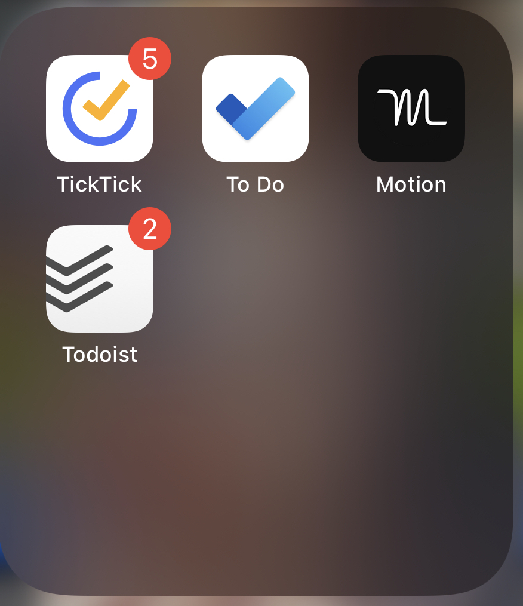

Wirecutter reviewed the best todo list apps and declared “ticktick” the winner. After all my research here’s what I’ve learned.
Types of Todo list apps
Programmers love wasting time making todo list apps apparently, because this is one wheel that’s reinvented by anyone with their own way of doing things. When at a FAANG company, I saw five different todo/project management applications.
People like me also waste a lot of time trying to find the right system and then waste more time writing blog posts out there. I suppose it’s just cathartic to get all of this info out there.
Generally I observe that these apps fall into the following categories:
- Basic check lists: iPhone Notes app, Google Keep
- Task managers: Todoist, To Do, Things3, TickTick, Google Tasks
- Daily planners: Structured
- Project managers: Notion, Asana, Monday, GitHub Projects, Jira
- Automatic calendars: Motion and Reclaim.
Each has their strengths generally along the dimension of managing own work and managing work with others.
At the end of the day, I want to manage my own tasks. If my collaborators use something like Jira or GitHub projects, I still have to decide if I want to record all my next steps in these platforms or use something more designed to handle the nitty gritty.
Comparisons
For this to be a great blog post I would include screen shots. But I’m still not even sure people read my blog so I’m just going to give you a brain dump and you can go check out the apps yourself.
I considered many dimensions but this is what I came up with as a core feature set:
- Good iOS widget. I want to see my tasks on the home page of my iPhone.
- Calendar integration
- Mac App and iPhone app
- Smart time parsing
- Nested Lists/tags. This lets me easily see across projects at work or home.
- Duration.
Structured
The highest rated app for planning on the App Store is “Structured”. Where this app excels is it’s simplicity. It’s likely best for someone like a student that wants to plan out when they’ll get their homework done. What I loved about this app, and what I wish many others apps had, is a duration estimation for a task. Why is it so hard for developers to realize that tasks take time? They obsess over list keeping and app design but ignore the second most basic question: how long will this take? Structured kind of solves this. What I don’t like about this app is the design. While others praise it for its beauty and simplicity I thought the visual feel of it was distracting.
Microsoft To Do
Microsoft To Do used to be a favorite of mine. I loved its daily planner and smart suggestions. It has the philosophy that every day you should start fresh. All unfinished tasks will be removed from today and you’re left to pick and choose what you want to do. The fatal limitation however is that it lacks the ability to plan tomorrows a tasks the day before. So this forces people to have to populate their tasks at the start of the day. This is the worst time for planning for me because I want to get up and get going ASAP. (But honestly most times I wake up 15 minutes before my first meeting or am spending time pouring milk into my kids’ cereal.) Morning is not the best time to plan a day for me, so I lost interest here.
Todoist
I’ve tried many times to get into Todoist. It has smart text parsing which is apparently best in class from my Reddit research.
Things it has:
- Projects can have section labels. This lets you organize your list more meaningfully. This is great, only that TickTick does it better. Each project in TickTick can have subprojects. These subprojects act like sections. You can also move subproject from one list to another.
Things it lacks:
- Can’t nest labels (tags)
- Can’t create labels dynamically - you need to manually add them on the label screen before a task can leverage them.
- Can’t pull in my calendar.
- Doesn’t have check items, only subtasks.
Sorted3
This app takes a different design. It’s main selling point is the ability to auto schedule your day based on the tasks you have for that day.
Pros:
- Rich formatting on description. Supports markdown.
- clean UI. Good shortcuts.
- integrates with calendar to plan your day.
- Easily plan duration.
- Really nice widgets.
Cons:
- Doesn’t have subtasks, but has check boxes
- No prioritization or smart filters. Just tags and lists.
- Can’t easily see across lists like you can in TickTick
Auto schedule is nice but could be kind of gimmicky. If you have 8 meetings in a day and five 30 min free blocks but all your tasks for the day are an hour, it would put all your tasks at the end of the day. I found it kind of buggy.
Automated
Motion became popular as a calendar organizer. Add a task and Motion will figure out when to do that for you. If you change your meeting then Motion will adjust when your tasks will get done. Cons: it’s expensive ($20-$35 per month). It’s mobile app is horrid. It didn’t seem like it offered sub tasks and all that. So you really need to trust the algorithm.
It gets the notion of task-duration right. But if you want to jot down notes of all the next actions you need to take on a project, your up the creek. I’m also not sure how it handles task dependency - if I put in 5 tasks for a project will it know their order? Not sure. Again I’ve never tried this app so take this all with a grain of salt.
Reclaim is another app claiming to do the same thing and offers a free tier. I did as much as set up my account with this.
Perhaps if I gave these more attention they’d prove their worth. I’ve tried calendaring my todos in the past and it hasn’t been very effective for me. Perhaps these apps would solve it but I think I need a good mobile app.
Anyway, you can’t beat free and free is working for me on TickTick right now. Also, my calendar is very open generally so I don’t have the same problems a busy manager might have.
I think these apps would be best for people who have meeting heavy workflows. It handles the schedules as you need.
Akiflow
This app seemed expensive ($15/mo), no mobile app, but has an awesome calendar. The philosophy is you have to assign every task to a date and time to move it out of the inbox. That seemed like a headache to me, and seemed like I’d be constantly managing the inbox. That and I’m cheap and want a mobile app.
Sunsama
$20 per mo or $192/year. Super fast customer support.
Features: * Mobile app, Mac app. * Duration
Pros: * Channels (lists) * great shortcuts * can align tasks with objectives * more of a mindful daily planner * Integrates with Todoist and other apps. You can pull in all to foist metadata including subtasks and check them off in Sunsama. Additionally, you can add duration and calendar your Todoist tasks. * Can export all the tasks to csv. * Can split calendar events.
Cons: * Widgets are weak * No priority labels * No task tags/labels. (But you can use Todoist for this if you want.)
Reclaim.ai
Task manager isn’t as good as Sunsama. Only $8/mo for pro. Has todoist integration too, but that’s a pro feature.
This is one I’ll want to try later. It has the habit tracking and smart flexible calendaring. Not sure how good of a task manager it is. TBD.
Vimcal
Fast calendar. Not for tasks or backlogs it seems though. Didn’t try.
Asana
Oh man, how many times have I downloaded Asana? I started with it in 2014 and thought it was cool. Trying it again in 2022 it had a similar feel.
Asana is the only task manager app I reviewed that has dependency management. Sure, Jira has blockers and all that but Jiras more aimed toward high level project management. It’s not fast at the
Other things I remember liking:
- infinite subtasks. This was fun and also distracting.
- Automation features. You can create workflows for what happens to a task
- Communication. It has a nice inbox feature that let me communicate with my manager easily.
Cons:
- Clunky on the board management. If I want to start a new project things get messy and overwhelming.
Jira/GitHub projects
Great at a high level but messy to manage the gritty day to day. Doesn’t let you schedule or put due dates. So eventually I’d need some other tool to manage all the minutia of getting things done.
Not considered
I didn’t look at Things3 or OmniFocus, which are considered of the best tools. Things3 was too expensive and seemed like it had many of the same features as TickTick, except I personally didn’t like the UI.
Why TickTick?
For a free app, TickTick has a ton of features. It’s by far the most feature rich free app around. I almost want to pay them just because the app is so good. I decided I will do this only if 30 days from now I’m still using it :)
This is the first app I’ve seen that lets you take a task and drag it into a calendar and set a time. This is by far the most intuitive method to me of planning: have a sense for what needs to get done on a day, and the night before plan it out.
Things I love about TickTick:
- They pay attention to all the details. For example, a minor detail is how the tags appear on the task. If you tag something three times, what order should they appear in? Well, TickTick let’s you arrange the order of the tags on the menu bar. The menu-bar order determines how the tags will be ordered visually.
- You can nest tags. This makes it easy to see across projects. For example I use a “Work” tag and individual project tags that are nested under work. I can then click on the parent tag and see across all my subproject tags.
- You can pin tasks, which puts those tasks at the top of your widget, top of your today, etc.
- The widgets are amazing. They’re really clear and concise. The tasks are ordered how I think they should be based on what I’ve pinned or prioritized.
- The calendar integration so great. It’s super easy to drag a task onto today’s calendar and set its duration.
- Pomodoro timer. This focus mode lets me see how long I spend on a task.
- Slack integration. Add a task from a slack comment.
- Task templates are great for keeping packing lists and such.
- TickTick let’s you take notes in addition to making tasks. Notes support markdown and can be tagged like any task.
- The app is so customizable! Everything in the app can be easily rearranged or hidden as you want.
It has a ton of other features I haven’t mentioned yet, like the Eisenhower matrix and an Gantt chart.
Cons:
- Can’t automate my calendar easily.
- I get distracted adding everything into the app. Managing the task manager is a thing.
Takeaways and other Meta Points
I’ve learned a lot about all the apps out there and I can say that what will work for me today might not work for me tomorrow as my roles and responsibilities change.
I’ve heard it said that effectiveness is getting a task done. Efficiency is knowing what to work on. None of these apps solve for efficiency, which is arguably the core productivity killer.
Reddit is a great place to learn how other people use these tools. I consulted Reddit threads for TickTick and Todoist to hear how others use the app.
Disclaimer
I’ve only used TickTick app for 7 days now at work, and 30 days while on paternity leave. If I’m still using it 3 months from now I’ll come back and do another post.
Apps reviewed
Project/Team managers
- Asana
- ClickUp
- Monday.com
- Jira
- GitHub projects
To do lists
- Any.Do
- Microsoft To Do
- Google Tasks
- Taskade
- Tasks
- Todoist
- Structured
- Sorted3
- GQueues
Document apps
- Craft
- Apple Notes
- Workflowy
Scheduling apps
- Tascaly
- Sunsama
- Motion
- Reclaim.ai
- Akiflow
Not reviewed:
- OmniFocus
- Things3
_________________________
Bryan lives somewhere at the intersection of faith, fatherhood, and futurism and writes about tech, books, Christianity, gratitude, and whatever’s on his mind. If you liked reading, perhaps you’ll also like subscribing: